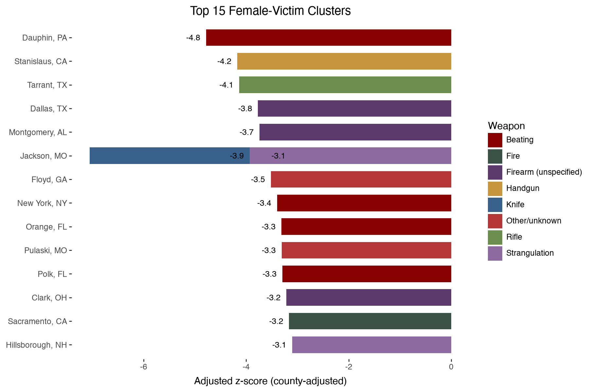

Code
import pandas as pd
import numpy as np
from plotnine import *
plain = theme_bw() + theme(
panel_grid_major=element_blank(),
panel_grid_minor=element_blank(),
panel_border=element_blank(),
panel_background=element_blank(),
)import pandas as pd
import numpy as np
from plotnine import *
plain = theme_bw() + theme(
panel_grid_major=element_blank(),
panel_grid_minor=element_blank(),
panel_border=element_blank(),
panel_background=element_blank(),
)Following Hargrove’s method, I grouped murders by county, victim sex, and weapon, then compared how many each group actually solved with how many the model expected.
df = pd.read_csv("data/scored.csv")
print(df.shape)(793144, 17)793,144 scored murders.
df.head()| ID | CNTYFIPS | State | Agentype | Year | Month | VicAge | VicSex | VicRace | VicEthnic | Weapon | VicCount | solved | p_solved | p_casemix | p_as_white | fold | |
|---|---|---|---|---|---|---|---|---|---|---|---|---|---|---|---|---|---|
| 0 | 197609001AL00400 | Autauga, AL | Alabama | Sheriff | 1976 | September | 30.0 | Male | Black | Unknown or not reported | Other or type unknown | 0 | 0 | 0.585552 | 0.659490 | 0.467747 | 0 |
| 1 | 197701001AL00400 | Autauga, AL | Alabama | Sheriff | 1977 | January | 65.0 | Female | Black | Unknown or not reported | Other or type unknown | 0 | 1 | 0.710360 | 0.575851 | 0.520601 | 2 |
| 2 | 197703001AL00400 | Autauga, AL | Alabama | Sheriff | 1977 | March | 48.0 | Male | White | Unknown or not reported | Handgun - pistol, revolver, etc | 0 | 1 | 0.878045 | 0.896676 | 0.878045 | 4 |
| 3 | 197703001AL00401 | Autauga, AL | Alabama | Municipal police | 1977 | March | 27.0 | Male | Black | Unknown or not reported | Shotgun | 0 | 1 | 0.964655 | 0.946454 | 0.948538 | 3 |
| 4 | 197708001AL00400 | Autauga, AL | Alabama | Sheriff | 1977 | August | 17.0 | Female | Black | Unknown or not reported | Knife or cutting instrument | 0 | 1 | 0.851718 | 0.904176 | 0.602369 | 1 |
df["Weapon"].value_counts()Weapon
Handgun - pistol, revolver, etc 390187
Knife or cutting instrument 117772
Firearm, type not stated 68129
Personal weapons, includes beating 45499
Other or type unknown 38978
Shotgun 38120
Blunt object - hammer, club, etc 35553
Rifle 29080
Strangulation - hanging 10019
Fire 7471
Asphyxiation - includes death by gas 4687
Other gun 3054
Narcotics or drugs, sleeping pills 1951
Drowning 1255
Explosives 603
Poison - does not include gas 538
Pushed or thrown out window 248
Name: count, dtype: int64I combined the two strangulation codes since they’re basically the same method.
df["Weapon"] = df["Weapon"].replace({"Strangulation - hanging": "Strangulation", "Asphyxiation - includes death by gas": "Strangulation"})
df["Weapon"].value_counts()Weapon
Handgun - pistol, revolver, etc 390187
Knife or cutting instrument 117772
Firearm, type not stated 68129
Personal weapons, includes beating 45499
Other or type unknown 38978
Shotgun 38120
Blunt object - hammer, club, etc 35553
Rifle 29080
Strangulation 14706
Fire 7471
Other gun 3054
Narcotics or drugs, sleeping pills 1951
Drowning 1255
Explosives 603
Poison - does not include gas 538
Pushed or thrown out window 248
Name: count, dtype: int64That gives 14,706 strangulations.
The z-score is actual minus expected solved, divided by how much random variation is normal for a group that size. A very negative z means far fewer solved than expected.
df["n_in_incident"] = df.groupby("ID")["ID"].transform("size")
df["variance"] = df["n_in_incident"] * df["p_solved"] * (1 - df["p_solved"])
df["unsolved_inc"] = (1 - df["solved"]) / df["n_in_incident"]
clusters = df.groupby(["CNTYFIPS", "VicSex", "Weapon"])[["solved", "p_solved"]].sum()
clusters["n_murders"] = df.groupby(["CNTYFIPS", "VicSex", "Weapon"])["solved"].count()
clusters["z_score"] = (clusters["solved"] - clusters["p_solved"]) / np.sqrt(df.groupby(["CNTYFIPS", "VicSex", "Weapon"])["variance"].sum())
clusters = clusters.reset_index()
clusters = clusters.rename(columns={"solved": "actual_solved", "p_solved": "expected_solved"})
clusters["n_unsolved"] = clusters["n_murders"] - clusters["actual_solved"]
clusters["n_unsolved_inc"] = df.groupby(["CNTYFIPS", "VicSex", "Weapon"])["unsolved_inc"].sum().values
print(clusters.shape)
clusters.head()(39059, 9)| CNTYFIPS | VicSex | Weapon | actual_solved | expected_solved | n_murders | z_score | n_unsolved | n_unsolved_inc | |
|---|---|---|---|---|---|---|---|---|---|
| 0 | Abbeville, SC | Female | Fire | 1 | 0.865596 | 1 | 0.394048 | 0 | 0.0 |
| 1 | Abbeville, SC | Female | Firearm, type not stated | 1 | 1.340087 | 2 | -0.417484 | 1 | 1.0 |
| 2 | Abbeville, SC | Female | Handgun - pistol, revolver, etc | 8 | 7.746729 | 8 | 0.441904 | 0 | 0.0 |
| 3 | Abbeville, SC | Female | Knife or cutting instrument | 5 | 4.701506 | 5 | 0.467596 | 0 | 0.0 |
| 4 | Abbeville, SC | Female | Other or type unknown | 1 | 0.556277 | 1 | 0.893121 | 0 | 0.0 |
39,059 groups.
A group with only one or two unsolved murders can’t really be a cluster, so I kept groups with at least 5 separate unsolved incidents. That way one fire or shooting with a lot of victims only counts once.
candidates = clusters[clusters["n_unsolved_inc"] >= 5]
print(candidates.shape)
candidates.sort_values("z_score").head(20)(3512, 9)| CNTYFIPS | VicSex | Weapon | actual_solved | expected_solved | n_murders | z_score | n_unsolved | n_unsolved_inc | |
|---|---|---|---|---|---|---|---|---|---|
| 9053 | Dallas, TX | Male | Handgun - pistol, revolver, etc | 3981 | 4622.454173 | 5904 | -19.549131 | 1923 | 1850.833333 |
| 12556 | Fulton, GA | Male | Handgun - pistol, revolver, etc | 2214 | 2797.466920 | 4330 | -18.679382 | 2116 | 2071.833333 |
| 29952 | Richmond, VA | Male | Handgun - pistol, revolver, etc | 859 | 1151.178343 | 1614 | -15.724536 | 755 | 727.100000 |
| 9052 | Dallas, TX | Male | Firearm, type not stated | 516 | 837.090841 | 1706 | -15.365729 | 1190 | 1149.250000 |
| 26777 | Orleans, LA | Male | Handgun - pistol, revolver, etc | 2777 | 3313.562293 | 5527 | -14.440875 | 2750 | 2661.666667 |
| 598 | Allegheny, PA | Male | Handgun - pistol, revolver, etc | 742 | 963.917139 | 1439 | -12.771104 | 697 | 673.500000 |
| 19254 | Lake, IN | Male | Handgun - pistol, revolver, etc | 1077 | 1349.842253 | 2143 | -11.889799 | 1066 | 1018.500000 |
| 31000 | San Francisco, CA | Male | Handgun - pistol, revolver, etc | 754 | 970.664327 | 1652 | -10.880675 | 898 | 876.333333 |
| 9054 | Dallas, TX | Male | Knife or cutting instrument | 878 | 1014.043173 | 1253 | -9.762397 | 375 | 367.833333 |
| 11244 | Essex, NJ | Male | Handgun - pistol, revolver, etc | 1394 | 1673.291063 | 3329 | -9.723139 | 1935 | 1887.083333 |
| 33052 | St. Louis city, MO | Male | Firearm, type not stated | 452 | 662.062332 | 2150 | -9.716056 | 1698 | 1654.466667 |
| 33053 | St. Louis city, MO | Male | Handgun - pistol, revolver, etc | 1490 | 1740.730006 | 2812 | -9.634987 | 1322 | 1282.500000 |
| 33670 | Suffolk, MA | Male | Handgun - pistol, revolver, etc | 434 | 591.975228 | 1144 | -9.513853 | 710 | 701.666667 |
| 20228 | Lehigh, PA | Male | Handgun - pistol, revolver, etc | 85 | 140.791917 | 189 | -9.257332 | 104 | 101.000000 |
| 15796 | Hinds, MS | Male | Handgun - pistol, revolver, etc | 1052 | 1179.175695 | 1497 | -8.195558 | 445 | 437.000000 |
| 11107 | Erie, NY | Male | Handgun - pistol, revolver, etc | 241 | 356.178478 | 783 | -8.115760 | 542 | 528.250000 |
| 24435 | Montgomery, AL | Male | Firearm, type not stated | 29 | 77.419360 | 157 | -8.085687 | 128 | 128.000000 |
| 31001 | San Francisco, CA | Male | Knife or cutting instrument | 407 | 498.007866 | 673 | -8.010975 | 266 | 261.166667 |
| 10536 | Duval, FL | Male | Handgun - pistol, revolver, etc | 1024 | 1175.948730 | 1722 | -8.002218 | 698 | 689.500000 |
| 9229 | Davidson, TN | Male | Handgun - pistol, revolver, etc | 1428 | 1559.957491 | 1879 | -7.985682 | 451 | 444.000000 |
3,512 groups left, and the top 20 is almost all male handgun murders in big cities like Dallas, Atlanta, and Richmond. Those counties solve fewer murders across the board, so every group there looks bad. That’s the place, not a serial killer.
To fix that, I compared each group to the rest of its own county, leaving the group itself out so a real cluster can’t pull down its own county’s rate.
clusters["variance"] = df.groupby(["CNTYFIPS", "VicSex", "Weapon"])["variance"].sum().values
county = clusters.groupby("CNTYFIPS")[["actual_solved", "expected_solved"]].sum()
clusters["county_actual"] = clusters["CNTYFIPS"].map(county["actual_solved"])
clusters["county_expected"] = clusters["CNTYFIPS"].map(county["expected_solved"])
clusters["county_ratio"] = (clusters["county_actual"] - clusters["actual_solved"]) / (clusters["county_expected"] - clusters["expected_solved"])
clusters["adj_expected"] = clusters["expected_solved"] * clusters["county_ratio"]
clusters["adj_z_score"] = (clusters["actual_solved"] - clusters["adj_expected"]) / np.sqrt(clusters["variance"])
candidates = clusters[clusters["n_unsolved_inc"] >= 5]
candidates.sort_values("adj_z_score").head(20)| CNTYFIPS | VicSex | Weapon | actual_solved | expected_solved | n_murders | z_score | n_unsolved | n_unsolved_inc | variance | county_actual | county_expected | county_ratio | adj_expected | adj_z_score | |
|---|---|---|---|---|---|---|---|---|---|---|---|---|---|---|---|
| 598 | Allegheny, PA | Male | Handgun - pistol, revolver, etc | 742 | 963.917139 | 1439 | -12.771104 | 697 | 673.500000 | 301.942877 | 2019 | 2260.646734 | 0.984785 | 949.251249 | -11.927097 |
| 9052 | Dallas, TX | Male | Firearm, type not stated | 516 | 837.090841 | 1706 | -15.365729 | 1190 | 1149.250000 | 436.666125 | 8454 | 9969.948674 | 0.869169 | 727.573692 | -10.124811 |
| 20228 | Lehigh, PA | Male | Handgun - pistol, revolver, etc | 85 | 140.791917 | 189 | -9.257332 | 104 | 101.000000 | 36.322093 | 343 | 402.900740 | 0.984324 | 138.584861 | -8.891124 |
| 24435 | Montgomery, AL | Male | Firearm, type not stated | 29 | 77.419360 | 157 | -8.085687 | 128 | 128.000000 | 35.859497 | 885 | 1013.851819 | 0.914108 | 70.769623 | -6.975229 |
| 12556 | Fulton, GA | Male | Handgun - pistol, revolver, etc | 2214 | 2797.466920 | 4330 | -18.679382 | 2116 | 2071.833333 | 975.680132 | 4368 | 5277.810614 | 0.868428 | 2429.398700 | -6.895874 |
| 29952 | Richmond, VA | Male | Handgun - pistol, revolver, etc | 859 | 1151.178343 | 1614 | -15.724536 | 755 | 727.100000 | 345.255325 | 1953 | 2436.047420 | 0.851449 | 980.169209 | -6.521118 |
| 11107 | Erie, NY | Male | Handgun - pistol, revolver, etc | 241 | 356.178478 | 783 | -8.115760 | 542 | 528.250000 | 201.411500 | 1128 | 1317.819126 | 0.922382 | 328.532608 | -6.167764 |
| 4740 | Cameron, TX | Male | Handgun - pistol, revolver, etc | 196 | 216.659172 | 282 | -2.790556 | 86 | 81.000000 | 54.808060 | 532 | 520.264844 | 1.106699 | 239.776422 | -5.913138 |
| 37431 | Webb, TX | Male | Handgun - pistol, revolver, etc | 145 | 165.390724 | 214 | -3.094217 | 69 | 63.000000 | 43.427389 | 423 | 417.388921 | 1.103182 | 182.456153 | -5.683833 |
| 33052 | St. Louis city, MO | Male | Firearm, type not stated | 452 | 662.062332 | 2150 | -9.716056 | 1698 | 1654.466667 | 467.429782 | 3489 | 4214.664787 | 0.854866 | 565.974755 | -5.271697 |
| 2696 | Bexar, TX | Male | Handgun - pistol, revolver, etc | 1743 | 1884.865202 | 2436 | -6.647343 | 693 | 662.500000 | 455.465647 | 4637 | 4831.875945 | 0.982012 | 1850.960302 | -5.058669 |
| 31297 | Santa Clara, CA | Male | Knife or cutting instrument | 359 | 355.044871 | 482 | 0.405055 | 123 | 120.000000 | 95.343820 | 1961 | 1753.172634 | 1.145818 | 406.816815 | -4.897048 |
| 9170 | Dauphin, PA | Female | Personal weapons, includes beating | 9 | 15.204185 | 18 | -3.931036 | 9 | 8.000000 | 2.490895 | 505 | 470.880297 | 1.088492 | 16.549640 | -4.783530 |
| 24014 | Mobile, AL | Male | Firearm, type not stated | 32 | 61.396735 | 135 | -5.191340 | 103 | 103.000000 | 32.065593 | 1638 | 1742.958737 | 0.955064 | 58.637836 | -4.704130 |
| 21812 | Madison, MS | Male | Firearm, type not stated | 0 | 5.143343 | 7 | -4.448112 | 7 | 7.000000 | 1.337025 | 119 | 119.912639 | 1.036863 | 5.332941 | -4.612081 |
| 3642 | Broward, FL | Male | Handgun - pistol, revolver, etc | 826 | 904.963699 | 1252 | -5.012955 | 426 | 419.000000 | 248.123217 | 2752 | 2845.865047 | 0.992322 | 898.015804 | -4.571873 |
| 17025 | Jackson, MO | Male | Blunt object - hammer, club, etc | 119 | 133.243913 | 196 | -2.218872 | 77 | 77.000000 | 41.209202 | 3771 | 3414.555200 | 1.112970 | 148.296436 | -4.563706 |
| 9685 | Delaware, PA | Male | Firearm, type not stated | 40 | 82.854083 | 259 | -5.707610 | 219 | 214.500000 | 56.373606 | 711 | 833.338120 | 0.894090 | 74.078977 | -4.538879 |
| 31126 | San Mateo, CA | Male | Handgun - pistol, revolver, etc | 264 | 304.990996 | 514 | -3.564632 | 250 | 241.000000 | 132.235375 | 720 | 745.904153 | 1.034217 | 315.426954 | -4.472156 |
| 22761 | Maury, TN | Male | Firearm, type not stated | 11 | 19.349010 | 25 | -3.971273 | 14 | 14.000000 | 4.419881 | 182 | 182.048113 | 1.051020 | 20.336196 | -4.440835 |
Then I focused on murders of women, since that’s where Hargrove’s method looks for serial killers.
print(candidates["adj_z_score"].isna().sum())
female = candidates[candidates["VicSex"] == "Female"]
print(female.shape)
female.sort_values("adj_z_score").head(20)0
(1197, 15)| CNTYFIPS | VicSex | Weapon | actual_solved | expected_solved | n_murders | z_score | n_unsolved | n_unsolved_inc | variance | county_actual | county_expected | county_ratio | adj_expected | adj_z_score | |
|---|---|---|---|---|---|---|---|---|---|---|---|---|---|---|---|
| 9170 | Dauphin, PA | Female | Personal weapons, includes beating | 9 | 15.204185 | 18 | -3.931036 | 9 | 8.000000 | 2.490895 | 505 | 470.880297 | 1.088492 | 16.549640 | -4.783530 |
| 33253 | Stanislaus, CA | Female | Handgun - pistol, revolver, etc | 57 | 59.631896 | 72 | -0.781791 | 15 | 15.000000 | 11.333278 | 979 | 833.341582 | 1.191661 | 71.061031 | -4.176759 |
| 34293 | Tarrant, TX | Female | Rifle | 26 | 33.777691 | 37 | -4.084918 | 11 | 9.700000 | 3.625223 | 4087 | 4083.176745 | 1.002865 | 33.874459 | -4.135742 |
| 17024 | Jackson, MO | Female | Strangulation | 34 | 46.815578 | 94 | -2.807654 | 60 | 59.000000 | 20.834800 | 3771 | 3414.555200 | 1.109646 | 51.948735 | -3.932232 |
| 9036 | Dallas, TX | Female | Firearm, type not stated | 77 | 122.489381 | 209 | -6.305787 | 132 | 126.750000 | 52.040503 | 8454 | 9969.948674 | 0.850676 | 104.198811 | -3.770328 |
| 24424 | Montgomery, AL | Female | Firearm, type not stated | 6 | 19.490174 | 38 | -4.495138 | 32 | 32.000000 | 9.006354 | 885 | 1013.851819 | 0.883984 | 17.229007 | -3.741682 |
| 11800 | Floyd, GA | Female | Other or type unknown | 1 | 3.851638 | 6 | -2.716789 | 5 | 5.000000 | 1.101735 | 244 | 203.176502 | 1.219115 | 4.695591 | -3.520833 |
| 25559 | New York, NY | Female | Personal weapons, includes beating | 673 | 752.247959 | 1285 | -4.593007 | 612 | 598.666667 | 297.702103 | 23346 | 24064.232964 | 0.972590 | 731.628730 | -3.397970 |
| 26613 | Orange, FL | Female | Personal weapons, includes beating | 71 | 78.435824 | 91 | -2.278490 | 20 | 19.000000 | 10.650348 | 2128 | 2050.534126 | 1.043051 | 81.812600 | -3.313205 |
| 29189 | Pulaski, MO | Female | Other or type unknown | 1 | 6.168958 | 8 | -4.463997 | 7 | 6.500000 | 1.340782 | 39 | 54.674858 | 0.783410 | 4.832823 | -3.310088 |
| 28504 | Polk, FL | Female | Personal weapons, includes beating | 26 | 30.398082 | 34 | -2.516150 | 8 | 8.000000 | 3.055299 | 975 | 938.753189 | 1.044746 | 31.758263 | -3.294311 |
| 6727 | Clark, OH | Female | Firearm, type not stated | 0 | 3.223407 | 5 | -3.098337 | 5 | 5.000000 | 1.082363 | 216 | 211.270846 | 1.038225 | 3.346621 | -3.216770 |
| 30672 | Sacramento, CA | Female | Fire | 5 | 8.993224 | 12 | -2.447765 | 7 | 5.500000 | 2.661385 | 3055 | 2707.915452 | 1.130081 | 10.163069 | -3.164857 |
| 17016 | Jackson, MO | Female | Knife or cutting instrument | 117 | 121.707818 | 168 | -0.813785 | 51 | 48.000000 | 33.467241 | 3771 | 3414.555200 | 1.109678 | 135.056477 | -3.121211 |
| 15749 | Hillsborough, NH | Female | Strangulation | 1 | 4.322644 | 6 | -3.134167 | 5 | 5.000000 | 1.123889 | 235 | 240.033250 | 0.992743 | 4.291273 | -3.104576 |
| 2681 | Bexar, TX | Female | Knife or cutting instrument | 154 | 180.821093 | 230 | -4.103563 | 76 | 71.166667 | 42.719953 | 4637 | 4831.875945 | 0.963867 | 174.287551 | -3.103947 |
| 2107 | Beaver, PA | Female | Blunt object - hammer, club, etc | 4 | 7.325099 | 10 | -2.394406 | 6 | 6.000000 | 1.928472 | 179 | 164.458184 | 1.113706 | 8.158003 | -2.994182 |
| 24581 | Montgomery, OH | Female | Personal weapons, includes beating | 51 | 58.148353 | 72 | -2.053164 | 21 | 21.000000 | 12.121729 | 1617 | 1545.338053 | 1.052993 | 61.229795 | -2.938222 |
| 14906 | Harris, TX | Female | Knife or cutting instrument | 459 | 479.943200 | 615 | -1.960957 | 156 | 147.166667 | 114.064305 | 16006 | 15701.686014 | 1.021368 | 490.198594 | -2.921192 |
| 16062 | Houston, AL | Female | Handgun - pistol, revolver, etc | 25 | 26.370140 | 31 | -0.680909 | 6 | 6.000000 | 4.049044 | 244 | 213.445358 | 1.170652 | 30.870261 | -2.917300 |
1,197 female-victim groups. Jackson County, MO strangulations ranked 4th, which matches Lorenzo Gilyard’s Kansas City murders.
clusters.to_csv("data/clusters.csv", index=False)
print(clusters.shape)(39059, 15)I charted the top 15 to see what kinds of groups get flagged.
top_female = female.sort_values("adj_z_score").head(15).copy()
top_female["Weapon"] = top_female["Weapon"].replace({"Personal weapons, includes beating": "Beating", "Handgun - pistol, revolver, etc": "Handgun", "Firearm, type not stated": "Firearm (unspecified)", "Knife or cutting instrument": "Knife", "Other or type unknown": "Other/unknown", "Blunt object - hammer, club, etc": "Blunt object"})creepy_15 = [
"#8A0303", "#3B5249", "#5C3A6B", "#C8963E", "#38618C",
"#B53737", "#6B8E4E", "#8D6A9F", "#D96B27", "#5BC0BE",
"#4A151B", "#A3B18A", "#2E294E", "#D8CFC4", "#736B60"
](ggplot(top_female, aes(x="reorder(CNTYFIPS, -adj_z_score)", y="adj_z_score", fill='Weapon'))
+ geom_col(width=0.7)
+ geom_text(aes(label="round(adj_z_score, 1)"), nudge_y=-0.25, size=9)
+ coord_flip()
+ scale_fill_manual(values=creepy_15)
+ plain
+ theme(figure_size=(9, 6))
+ labs(title="Top 15 Female-Victim Clusters",
x="", y="Adjusted z-score (county-adjusted)", fill="Weapon"))
Scores run from about −4.8 to −3.1, so no single group stands way out. The list mixes small counties like Floyd, GA with big ones like New York and Dallas, and lots of different weapons, which is what I’d expect after adjusting for county. A low score just means a group is worth a closer look.